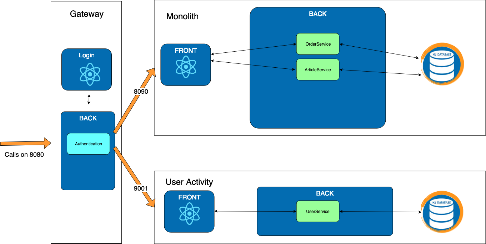

Exercise 2 : Gateway
Previously on HOMicS -> Exercise 1: User Activity
Context
In the previous schema, you might realize that there is a flaw. We don't have any authentication for the micro-service.
 What happens if you connect directly to the user-activity microservice ?
What happens if you connect directly to the user-activity microservice ?
You can go directly to user-activity. The login page is skipped and the data is accessible! Oopsy, not great at all.
We could duplicate all the security code in the new microservice. But imagine if we have twenty microservices, it's going to be a mess if we need to add the security in each of them. The services won't be loosely coupled. It's where the gateway becomes handy.
A gateway is a service that provides a single-entry point for certain groups of microservices. Any requests to our application will go through the gateway and it will be routing to our different services.
Goal
Create the Gateway microservice responsible for all authentication and redirection. It's going to handle the authentication and redirect to the monolith or the user-activity microservice.

Everything has been implemented in other microservices. You only need to edit the gateway.
At your keyboard
Checkout the branch:
git checkout exercise-2
There is a new folder for the gateway microservice. You are not going to start from scratch but you will need to implement some part of it.
Start the gateway and the two other services:
# gateway
mvn spring-boot:run -pl gateway
# monolith
mvn spring-boot:run -pl monolith
# user-activity
mvn spring-boot:run -pl user-activity
Navigate on the different pages and you realize that all pages return a 404. There is no routing in our application.
2 - Gateway
TODO 2.1: Application.yaml
There won't be any database for the gateway since it's not holding any data. It's going to be running on port 8080.
We are using ZUUL developed by Netflix that is an edge service that provides dynamic routing, monitoring, resiliency, security, and more. Spring integrated it in Spring Cloud.
You will need to set it up in your application.yaml.
 zuul documentation is available here
zuul documentation is available here
To help you with the configuration in your yml file, here is an example:
zuul:
routes:
testservice:
path: /test/**
url: http://example.com/test/
TODO 2.2: Enable Zuul
Checkout the second TODO to enable the Zuul Routing.
Checklist :
-
Since the routing is done and should be working, start your three apps if they aren't already up:
# gateway mvn spring-boot:run -pl gateway # monolith mvn spring-boot:run -pl monolith # user-activity mvn spring-boot:run -pl user-activity -
Verify that if you log in, you see your articles and all the pages under the same port: 8080.
What happens if you try to pay for a cart?
It doesn't work because the monolith doesn't know your user. Let's add it to our context in the next step.
TODO 2.3: Logged user information
Last but not least, you need to add the logged user to the headers so all micro services will be able to retrieve the connected user.
Open AddUserFilter and implement the run method so it adds the username into the request context.
Checklist :
-
To verify that gateway is well implemented, launch all the applications:
# Run monolith project mvn spring-boot:run -pl monolith # Run user-activity project mvn spring-boot:run -pl user-activity # Run Gateway project mvn spring-boot:run -pl gateway -
Access the HOMicS MarketPlace. You should be on the gateway. After logging, you should be directly redirect to the monolith and you can notify that the port is still 8080. You should be able to access as well the user-activity microservice on the User Activity micro tab.
Since the Gateway is running on port 8080, the port for the monolith has been changed to 8090.
List of TODOs
2.1 - file application.yaml for gateway
2.2 - file com.homics.gateway.GatewayApplication
2.3 - file com.homics.gateway.config.filter.AddUserFilter
Monolith database
You can access the monolith database console via the following url.
Results

 You can still access the other services directly on each port 8090 and 9001.
In practice, you will block those ports from the outside via a firewall.
You can still access the other services directly on each port 8090 and 9001.
In practice, you will block those ports from the outside via a firewall.
Well done. Let's continue on to the next step and our new microservices.